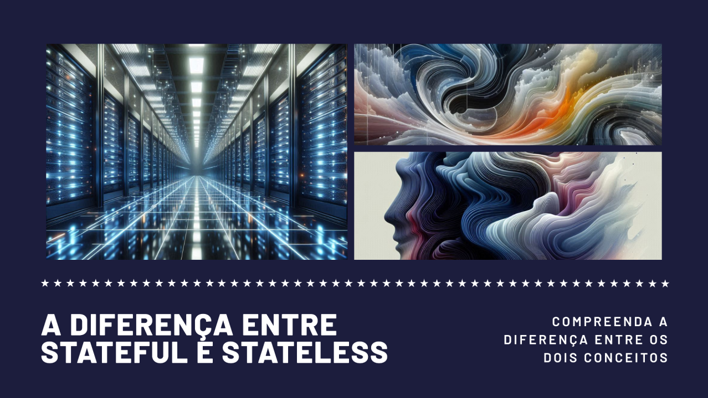
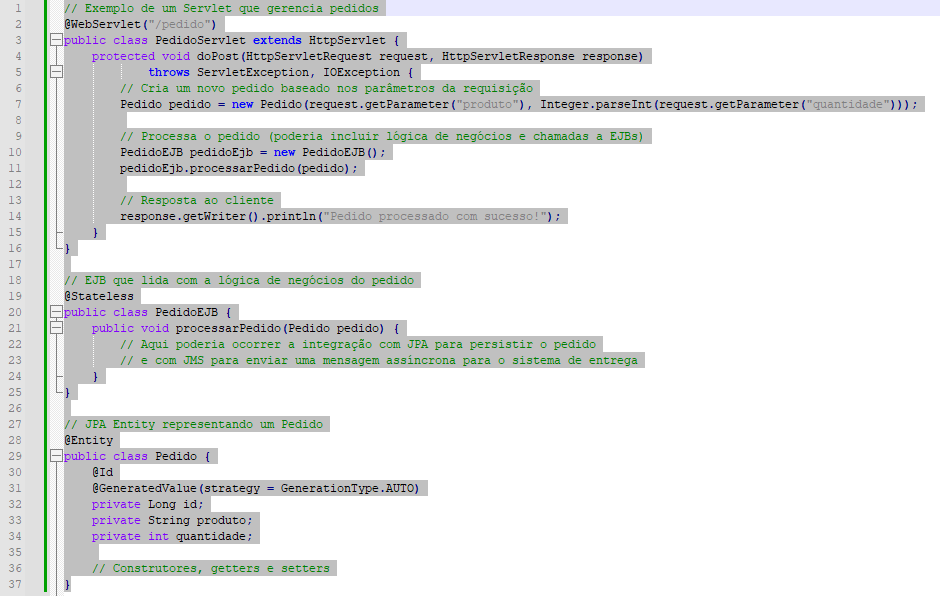

O recurso computacional e os conceitos entre Stateless e Stateful.
O Recurso Computacional

Desenvolvedor Java Sênior na Develcode
12 de maio de 2024
Recurso computacional refere-se a equipamentos, softwares e arquivos digitais que são administrados, mantidos ou operados pela área de Tecnologia da Informação (TI). Isso inclui computadores pessoais, servidores de rede, terminais, impressoras, redes de computadores, bancos de dados, sistemas desenvolvidos internamente ou por terceiros, entre outros. Esses recursos são essenciais para o funcionamento de sistemas complexos, desde aplicativos básicos em dispositivos móveis até supercomputadores usados em pesquisas científicas avançadas.
A relação entre recurso computacional e os conceitos de stateful e stateless está relacionada à persistência de informações. Um recurso computacional é considerado stateful quando mantém um estado interno, ou seja, armazena informações sobre o contexto ou histórico de interações. Por exemplo, um servidor de banco de dados que registra transações ou um aplicativo de mensagens que rastreia conversas é stateful. Por outro lado, um recurso stateless não mantém estado entre solicitações, sendo independente de qualquer contexto anterior. Exemplos incluem servidores web que respondem a solicitações sem armazenar informações específicas do cliente. A escolha entre stateful e stateless depende das necessidades do sistema e da eficiência desejada .
Para a arquitetura de desenvolvimento de software, os termos stateless e stateful desempenham papéis cruciais. Vamos focar no stateless. Uma aplicação ou processo stateless é composto por recursos isolados. Nenhuma referência ou informação sobre transações antigas é armazenada, e cada interação é tratada do zero. Essas aplicações fornecem funções ou serviços e utilizam a rede de entrega de conteúdo (CDN), a web ou servidores de impressão para processar solicitações a curto prazo. Por exemplo, uma pesquisa online que você faz para tirar dúvidas é uma transação stateless: você digita sua consulta, pressiona enter e, se a transação for interrompida, precisará começar outra. Transações stateless são como máquinas de vendas automáticas: você faz uma solicitação e recebe uma resposta. Já as aplicações stateful mantêm contexto e histórico, permitindo retomar transações onde pararam. Imagine-as como uma conversa contínua com a mesma pessoa. A maioria das aplicações diárias é stateful, enquanto os avanços tecnológicos, como microsserviços e containers, facilitam a criação e implantação de aplicações na nuvem.
Stateless e Stateful: O Que Significam?
- Stateless (sem estado): Aplicações ou processos stateless são recursos isolados. Eles não armazenam informações sobre transações anteriores e cada interação é tratada do zero. Essas aplicações fornecem funções ou serviços e usam a rede de entrega de conteúdo (CDN), a web ou servidores de impressão para processar solicitações a curto prazo. Um exemplo de transação stateless é uma pesquisa online em que você digita uma consulta no mecanismo de busca e pressiona “enter”. Se a transação for interrompida, você precisará começar outra. As transações stateless são como máquinas de vendas automáticas: você faz uma solicitação e recebe uma resposta.
- Stateful (com estado): Aplicações e processos stateful podem ser usados mais de uma vez, como e-mails e serviços bancários online. Eles são executados com base no contexto das transações anteriores. O estado dessas aplicações é mantido, permitindo que você retome uma transação de onde parou. Por exemplo, se você estiver realizando uma transação bancária online e ela for interrompida, poderá retomá-la exatamente de onde parou, pois o contexto e o histórico são armazenados. As aplicações stateful acompanham informações como localização da janela, preferências de configuração e atividades recentes. Pense em transações stateful como uma conversa contínua com a mesma pessoa.
Curiosidade
A especificação Java EE trata o estado stateless de maneira interessante. Vamos explorar um pouco mais sobre isso:
- Stateless Session Beans: Esses beans não mantêm um estado de conversação com o pedido. Quando um pedido invoca os métodos de um bean stateless, as variáveis de instância do bean podem conter um estado específico para aquele pedido, mas apenas durante a duração da invocação. Após a conclusão do método, o estado específico do pedido não deve ser retido.

Exemplo esquemático em camada de classes em Java EE com acesso a um recurso Stateless
Em outras palavras, os stateless session beans são projetados para serem efêmeros e sem memória. Eles não armazenam informações de estado entre chamadas de método, o que os torna ideais para processamento rápido e eficiente. Por exemplo, em um cenário de aplicativo da web, um bean stateless pode ser usado para executar operações de cálculo ou acesso a banco de dados sem a necessidade de manter informações de sessão específicas do pedido.
Essa abordagem é especialmente útil quando se lida com tarefas que não exigem rastreamento de estado contínuo, como autenticação, validação de dados ou cálculos matemáticos. Portanto, os beans stateless são uma escolha poderosa para otimizar o desempenho e a escalabilidade em aplicativos Java EE.
Conclusão
Em resumo, a escolha entre stateless e stateful depende das necessidades específicas da aplicação e dos recursos disponíveis. Ambos têm seus usos específicos para cada estratégia adotada, e a evolução tecnológica continua a moldar essa dinâmica entre os dois conceitos.